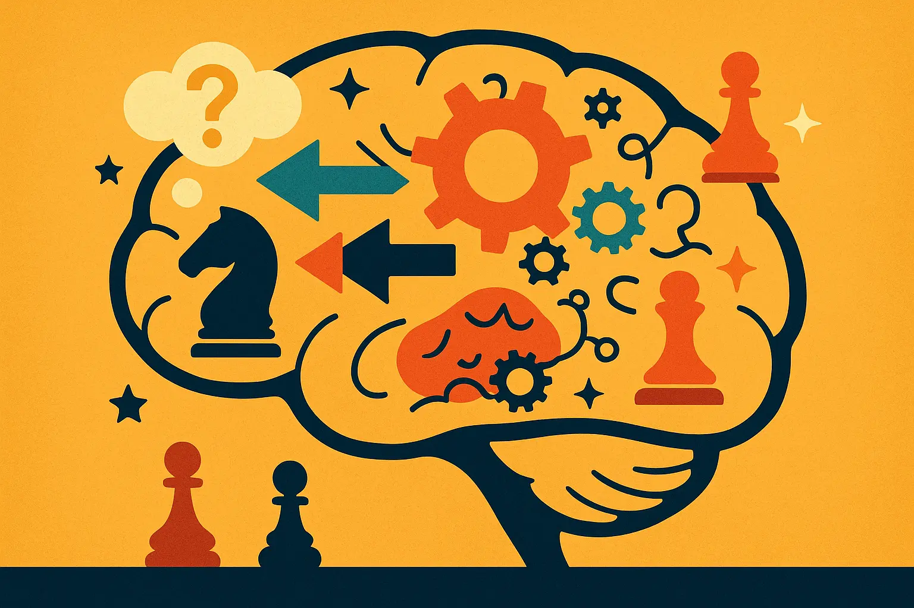
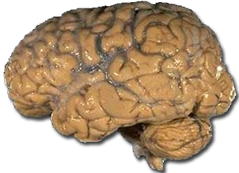

Au sommaire
- Pourquoi la psychologie est aussi importante que la technique
- 1. Le biais de confirmation : "Je VEUX que ce coup fonctionne"
- 2. L'ancrage mental : "J'avais prévu de jouer ça"
- 3. L'aversion à la perte : "Je ne PEUX PAS perdre cette pièce"
- 4. L'overconfidence : "Je suis gagnant, je peux relâcher"
- 5. Le biais de négativité : "Je suis foutu"
- 6. La paralysie décisionnelle : "Trop de choix, je ne sais plus"
- 7. Le biais émotionnel : "Je vais lui montrer qui est le plus fort"
- Programme d'entraînement mental (4 semaines)
- Les 5 exercices pratiques pour renforcer votre mental
- FAQ : Psychologie des échecs

Pourquoi la psychologie est AUSSI importante que la technique
Quand j'analyse les parties de mes élèves entre 1400 et 1800 Elo, je classe leurs erreurs en deux familles :
• Les erreurs purement techniques : le joueur ne connaissait pas le motif, ne pouvait pas trouver le coup
• Les erreurs d'origine psychologique : précipitation, rigidité du plan, relâchement quand la partie est gagnée
→ Dans la grande majorité des parties que j'analyse, la seconde famille est la plus lourde. Le joueur aurait pu trouver le bon coup : il ne l'a pas cherché.
C'est une observation d'enseignant sur mes propres élèves, pas une statistique issue d'une base de données.
Ce que j'ai appris après 3 ans d'enseignement :
- Un joueur 1400 avec un mental d'acier bat un 1600 fragile psychologiquement
- Les grands maîtres ne sont pas "plus intelligents" : ils ont juste éliminé leurs biais mentaux
- Passé 1600 Elo, le travail psychologique devient au moins aussi rentable que le travail technique -- c'est d'ailleurs une cause majeure de stagnation aux échecs que beaucoup ignorent
La bonne nouvelle ? Contrairement au talent tactique (qui prend des années à développer), vous pouvez corriger vos biais mentaux en quelques semaines avec les bonnes techniques.
Les 7 biais mentaux qui sabotent vos parties (et comment les éviter)
1Le biais de confirmation : "Je VEUX que ce coup fonctionne"
Définition : Vous voyez un coup séduisant... et vous cherchez uniquement les raisons qui prouvent qu'il fonctionne, en ignorant volontairement les failles.
Vous repérez un sacrifice de Dame spectaculaire. Votre cerveau s'emballe :
• "Si je sacrifie, j'ai mat en 3 coups !"
• Vous calculez les 3 coups gagnants
• Vous jouez le sacrifice
• Votre adversaire joue un 4ème coup (que vous n'aviez PAS vu)
• Vous perdez votre Dame pour rien
→ Votre cerveau a volontairement "oublié" de chercher les défenses adverses.
Pourquoi ce biais est si puissant aux échecs :
- Séduction des coups spectaculaires : Un sacrifice de Dame libère de la dopamine (plaisir anticipé)
- Ego : "Si je trouve ce coup génial, je suis brillant"
- Paresse cognitive : Chercher les failles demande plus d'effort mental
Comment l'éviter (technique de 30 secondes) :
Avant de jouer un coup séduisant, forcez-vous à :
1. Poser la question : "Qu'est-ce que mon adversaire va jouer pour CASSER mon plan ?"
2. Chercher activement la défense adverse (pas les variantes gagnantes)
3. Si vous ne trouvez RIEN après 30 secondes → Le coup est probablement bon
4. Si vous trouvez une défense → Abandon du plan ou calcul approfondi
Le réflexe qui distingue les joueurs forts : ils consacrent l'essentiel de leur réflexion à chercher les défenses et les ressources de l'adversaire, plutôt qu'à admirer leurs propres variantes gagnantes.
2L'ancrage mental : "J'avais prévu de jouer ça"
Définition : Vous planifiez un coup au tour précédent... et vous le jouez MÊME SI la situation a changé et qu'il n'est plus bon.
Scénario classique :
- Tour 15 : "Au prochain coup, je vais jouer e5 pour ouvrir le centre"
- Tour 16 : Votre adversaire joue un coup qui change tout (par ex. met un fou en prise)
- Vous jouez QUAND MÊME e5 (au lieu de prendre le fou gratuit)
- Pourquoi ? Parce que votre cerveau s'était "ancré" sur e5
À quel point c'est fréquent : c'est, de loin, l'erreur que je corrige le plus souvent chez les joueurs de 1400-1600 Elo — jouer le coup prévu deux coups plus tôt, alors que l'adversaire vient justement de changer la donne.
Comment l'éviter :
Après CHAQUE coup de l'adversaire :
1. Oubliez ce que vous aviez prévu (littéralement, effacez-le de votre tête)
2. Regardez l'échiquier comme si vous le voyiez pour la première fois
3. Posez la question : "Qu'est-ce qui a changé ?"
4. PUIS décidez de votre coup (qui peut être le même qu'avant, mais c'est un choix conscient)
Technique pro : Magnus Carlsen fait physiquement une pause de 3 secondes après chaque coup adverse pour "réinitialiser" son cerveau.
3L'aversion à la perte : "Je ne PEUX PAS perdre cette pièce"
Définition : La douleur de perdre une pièce est psychologiquement 2x plus forte que le plaisir d'en gagner une. Résultat : vous faites des erreurs pour "sauver" du matériel.
Kahneman et Tversky ont montré que face à un pari, nous ne traitons pas symétriquement les gains et les pertes : une perte pèse nettement plus lourd qu'un gain de même montant. C'est ce qu'on appelle l'aversion à la perte, l'un des résultats les plus solides de l'économie comportementale.
Aux échecs : Perdre une pièce "fait plus mal" que d'en gagner une "fait plaisir" → Vous prenez des risques stupides pour éviter la perte.
Manifestation typique aux échecs :
- Votre cavalier est attaqué → Vous le sauvez coûte que coûte (même en affaiblissant votre position)
- Alternative rationnelle : Sacrifier le cavalier pour une attaque décisive
- Mais votre cerveau hurle : "NON ! PAS LE CAVALIER !"
- Résultat : Vous sauvez le cavalier... et perdez la partie 10 coups plus tard
Comment l'éviter :
Quand une de vos pièces est attaquée :
1. Ne la sauvez PAS par réflexe
2. Calculez froidement : "Si je laisse cette pièce, qu'est-ce que je gagne en échange ?"
3. Comparez objectivement :
→ Sauver la pièce : quelle position j'obtiens ?
→ Sacrifier la pièce : quelle contre-attaque j'obtiens ?
4. Choisissez l'option la PLUS FORTE, pas celle qui préserve le matériel
Mantra mental : "Le matériel n'est qu'un outil pour gagner. Si je perds un cavalier mais gagne la partie, c'est un excellent deal."
4L'overconfidence : "Je suis gagnant, je peux relâcher"
Définition : Vous avez une position gagnante... et votre vigilance s'effondre. Vous jouez des coups "automatiques" sans calculer. Résultat : vous gâchez votre avantage.
• Vous êtes objectivement gagnant, avec une pièce d'avance
• Vous jouez les coups suivants « en pilote automatique », persuadé que la partie est pliée
• Un contre-jeu apparaît, et tout s'effondre en quelques coups
→ Le relâchement après l'avantage gâche énormément de parties déjà gagnées — c'est, selon moi, la manière la plus frustrante de perdre.
Manifestations typiques :
- Vous avez 2 pions d'avance : "C'est gagné, je peux jouer vite"
- Vous arrêtez de calculer profondément
- Vous jouez des coups "logiques" mais pas optimaux
- Votre adversaire trouve une tactique désespérée... qui fonctionne
- Vous égalisez ou perdez
Comment l'éviter :
Quand vous avez un avantage clair :
1. NE dites PAS "c'est gagné" (même dans votre tête)
2. Adoptez le mantra : "J'ai l'avantage. Maintenant, comment le CONVERTIR ?"
3. Redoublez de vigilance (paradoxalement, calculez PLUS en position gagnante)
4. Cherchez le coup le plus SIMPLE et SÛR (pas le plus brillant)
5. Célébrez uniquement après le mat ou l'abandon
Technique GM : Les grands maîtres sont PLUS concentrés en position gagnante qu'en position égale. Pourquoi ? Parce qu'ils savent que c'est là que les parties se perdent.
5Le biais de négativité : "Je suis foutu"
Définition : Vous êtes en position difficile... et votre cerveau amplifie la gravité de la situation. Vous pensez "c'est perdu" alors que la position est encore défendable.
Le problème : Cette croyance devient une prophétie auto-réalisatrice :
- Vous pensez "c'est perdu" → Vous arrêtez de chercher les meilleures défenses
- Vous jouez des coups passifs ou désespérés
- Vous perdez effectivement (alors que la position était tenable)
Deux joueurs dans la même position difficile ne jouent pas du tout la même partie selon ce qu'ils croient de cette position. Celui qui la juge « perdue » arrête de chercher, joue vite et accélère sa défaite. Celui qui la juge « désagréable mais défendable » continue à poser des problèmes, et sauve régulièrement des parties objectivement compromises.
→ Se déclarer perdu est souvent ce qui fait perdre. C'est une observation de terrain, pas une mesure de laboratoire — mais elle se vérifie partie après partie.
Comment l'éviter :
Quand vous êtes en difficulté :
1. Interdisez-vous de penser "c'est perdu" (bannissez cette phrase)
2. Remplacez par : "C'est difficile. Quel est mon meilleur coup défensif ?"
3. Cherchez activement :
→ Les pièges tactiques (votre adversaire peut se tromper)
→ Les forteresses (positions de nulle malgré le désavantage matériel)
→ Les contre-attaques désespérées (parfois ça marche !)
4. Et gardez ça en tête : au niveau amateur, une position « objectivement perdue » est très loin d'être perdue dans les faits — l'adversaire doit encore convertir, et c'est précisément là qu'il se trompe le plus souvent
Mantra : "Tant qu'il reste des pièces, il reste de l'espoir."
6La paralysie décisionnelle : "Trop de choix, je ne sais plus"
Définition : Face à plusieurs coups raisonnables, votre cerveau sature. Vous calculez, recalculez, hésitez... et finissez par jouer un coup médiocre (ou perdre au temps).
Pourquoi ça arrive :
- Positions complexes : 4-5 coups candidats séduisants
- Perfectionnisme : "Je DOIS trouver LE meilleur coup"
- Peur de l'erreur : "Et si je me trompe ?"
- Résultat : Vous passez 5 minutes à hésiter entre 3 coups similaires
• Le joueur engloutit une grande partie de son temps sur deux ou trois coups de la partie
• Il arrive en finale avec quelques minutes, alors que c'est le moment où la précision compte le plus
• Et il perd une position gagnante, au temps ou par précipitation
→ Vous perdez des parties GAGNANTES parce que vous avez hésité trop longtemps sur un coup où les options étaient équivalentes.
Comment l'éviter :
Quand vous hésitez entre plusieurs coups :
1. Identifiez 2-3 coups candidats (pas plus)
2. Calculez rapidement chacun (1 minute max par coup)
3. Si après 2 minutes, les coups semblent équivalents → CHOISISSEZ-EN UN et jouez-le
4. Principe clé : Un coup "85% optimal" joué en 2 minutes > Le coup "95% optimal" trouvé en 8 minutes
Le réflexe des joueurs forts : ils tranchent vite entre des coups d'apparence équivalente, et gardent leur temps de réflexion pour les rares positions où le choix change réellement la partie.
La vérité brutale : À votre niveau (et même à 2200 Elo), la différence entre le "meilleur coup" et le "3ème meilleur coup" est souvent insignifiante. Ce qui compte : JOUER et garder du temps pour la finale.
7Le biais émotionnel : "Je vais lui montrer qui est le plus fort"
Définition : Votre adversaire joue un coup qui vous énerve (ou vous sous-estime). Vous réagissez émotionnellement plutôt que rationnellement. Résultat : vous prenez des risques stupides.
Déclencheurs typiques :
- L'adversaire joue vite → "Il me prend pour un débutant, je vais lui clouer le bec"
- Vous perdez une pièce bêtement → "Je DOIS la récupérer MAINTENANT" (même si c'est tactiquement mauvais)
- Votre adversaire refuse une nulle → "Il croit qu'il peut me battre ? Je vais prendre tous les risques"
- Vous êtes en série de défaites → "Je DOIS gagner celle-là" (tension → erreurs)
Comment l'éviter :
Quand vous sentez une émotion négative (colère, frustration, ego blessé) :
1. NE jouez PAS immédiatement
2. Physiquement, éloignez votre main de l'échiquier
3. Respirez profondément 3 fois (oui, vraiment)
4. Posez-vous la question : "Est-ce que je joue ce coup parce qu'il est bon... ou parce que je suis énervé ?"
5. Si c'est émotionnel → Recalculez froidement
6. Si c'est rationnel → Jouez
Technique radicale : Si vous êtes vraiment en tilt (3 défaites d'affilée, grosse erreur), ARRÊTEZ de jouer. Faites une pause de 15 minutes. Votre cerveau a besoin de reset.
Programme d'entraînement mental (4 semaines)
Corriger ses biais mentaux demande de la pratique délibérée. Voici un programme progressif :
• Objectif : Identifier VOS biais dominants
• Exercice : Après chaque partie, notez vos erreurs et classez-les par biais
• Exemple : "J'ai perdu parce que j'ai joué trop vite en position gagnante (overconfidence)"
🗓️ Semaine 2 : Intervention
• Objectif : Appliquer UNE technique anti-biais par partie
• Exercice : Choisissez votre biais n°1 et appliquez la technique correspondante
• Exemple : Si c'est l'ancrage → Appliquez la règle "RAZ mental" après chaque coup adverse
🗓️ Semaine 3 : Automatisation
• Objectif : Transformer les techniques en réflexes
• Exercice : Appliquez 2-3 techniques simultanément par partie
• Astuce : Écrivez sur un post-it les règles et collez-le à côté de l'échiquier
🗓️ Semaine 4 : Mesure
• Objectif : Vérifier les progrès
• Exercice : Comparez vos erreurs psychologiques (semaine 1 vs semaine 4)
• Attendu : une baisse nette et visible dans votre journal, sur les erreurs que vous aviez identifiées
Les 5 exercices pratiques pour renforcer votre mental
Exercice 1 : Le "journal des erreurs psychologiques"
But : Prendre conscience de vos biais récurrents
Méthode :
- Après chaque partie (victoire ou défaite), notez dans un carnet :
- "Quel biais m'a coûté des points ?"
- Exemple : "Coup 23 : J'ai joué e5 (prévu au coup précédent) alors que Cxd4 gagnait une pièce (ancrage mental)"
- Fréquence : 1 analyse par jour (10 min)
- Résultat après 2 semaines : Vous identifierez vos 2-3 biais dominants
Exercice 2 : "Défends l'indéfendable"
But : Entraîner votre cerveau à ne jamais abandonner mentalement
Méthode :
- Sur Lichess/Chess.com, lancez une analyse de partie
- Trouvez une position où vous êtes perdant (-3.0 ou pire)
- Donnez-vous 5 minutes pour trouver les 3 meilleurs coups défensifs
- Objectif : Même si c'est objectivement perdu, cherchez les complications maximales
- Fréquence : 2-3 fois par semaine
- Résultat : Développe la résilience mentale et réduit le biais de négativité
Exercice 3 : "3 coups, 3 minutes"
But : Lutter contre la paralysie décisionnelle
Méthode :
- Dans vos parties, imposez-vous une règle stricte :
- Dès que vous hésitez entre 3 coups, activez un chrono de 3 minutes
- Après 3 minutes : VOUS DEVEZ jouer (même si vous n'êtes pas 100% sûr)
- Objectif : Apprendre à décider sous pression et accepter l'imperfection
- Résultat : vous arrivez en finale avec du temps au lieu de jouer les coups décisifs à la seconde
Exercice 4 : "La pause obligatoire"
But : Éliminer l'ancrage mental
Méthode :
- Après CHAQUE coup de l'adversaire, levez physiquement les yeux de l'échiquier pendant 2 secondes
- Regardez ailleurs (plafond, fenêtre, autre joueur)
- Revenez à l'échiquier et posez-vous : "Qu'est-ce qui a changé ?"
- Objectif : Créer une rupture cognitive pour réinitialiser le cerveau
- Résultat : c'est l'exercice le plus efficace que je connaisse contre les coups joués « par habitude »
Exercice 5 : "Le défi 10 parties sereines"
But : Développer le contrôle émotionnel
Méthode :
- Jouez 10 parties avec un objectif unique : zéro réaction émotionnelle
- Si vous gagnez : Aucune célébration (sauf un "bonne partie" neutre)
- Si vous perdez : Aucune frustration visible (sauf un "bien joué" sincère)
- Si vous vous énervez : La partie ne compte pas, recommencez à 0
- Objectif : Conditionner votre cerveau à la neutralité émotionnelle
- Résultat : Élève votre mental au niveau des joueurs 2000+
FAQ : Psychologie des échecs
Est-ce que les grands maîtres ont aussi des biais mentaux ?
Oui, absolument. Mais ils les ont identifiés et développé des contre-mesures automatiques. Exemple : Magnus Carlsen est connu pour sa patience extrême en positions gagnantes (anti-overconfidence). Hikaru Nakamura fait systématiquement une pause de 5 secondes après un coup surprenant (anti-ancrage).
Quel est le biais le plus destructeur pour un joueur amateur ?
L'overconfidence (selon mes observations sur 3 ans). C'est celui qui gâche le plus de parties "déjà gagnées". Pourquoi ? Parce qu'il frappe au PIRE moment : quand vous êtes en position de force et que vous relâchez votre vigilance.
Combien de temps faut-il pour corriger un biais mental ?
2 à 4 semaines de pratique délibérée. Contrairement au calcul tactique (qui prend des mois), les corrections psychologiques sont rapides SI vous les travaillez consciemment. Utilisez les exercices de cet article et vous verrez des progrès dès la semaine 2.
Comment gérer le tilt (série de défaites) ?
Règle stricte : Après 2 défaites consécutives, ARRÊTEZ de jouer pendant au moins 30 minutes. Votre cerveau est en mode "réparation d'ego" et prend de mauvaises décisions. Faites une activité physique (marche, pompes) pour évacuer la frustration, puis revenez.
Les échecs sont-ils plus psychologiques que techniques ?
Ça dépend du niveau :
- Débutant (0-1200) : 80% technique, 20% psychologie (il faut d'abord apprendre les règles et eviter les 10 erreurs classiques des débutants aux échecs)
- Intermédiaire (1200-1800) : 50% technique, 50% psychologie
- Avancé (1800+) : 30% technique, 70% psychologie (la différence se fait sur le mental)
Vous voulez un accompagnement sur le mental échiquéen ?
J'intègre systématiquement un travail psychologique dans mes cours : gestion du stress en compétition, analyse des erreurs mentales, développement de la résilience. Chez mes élèves les plus expérimentés, c'est souvent le levier qui débloque le plus de points Elo — parce que la technique, eux, ils l'ont déjà.
- ✓ Identification de vos biais dominants (analyse de vos parties)
- ✓ Programme mental personnalisé (exercices ciblés)
- ✓ Suivi de progression (mesure objective des améliorations)
- ✓ Techniques de compétition (gestion du stress, préparation mentale)
Conclusion : Votre cerveau est votre meilleur allié... s'il est entraîné
1. Biais de confirmation : Vous cherchez à prouver qu'un coup fonctionne (au lieu de chercher la réfutation)
2. Ancrage mental : Vous jouez ce que vous aviez prévu (même si la situation a changé)
3. Aversion à la perte : Vous prenez des risques stupides pour sauver du matériel
4. Overconfidence : Vous relâchez en position gagnante
5. Biais de négativité : Vous abandonnez mentalement trop tôt
6. Paralysie décisionnelle : Vous hésitez trop longtemps entre plusieurs coups
7. Biais émotionnel : Vous jouez sous le coup de la colère/frustration
→ Une grande partie de vos défaites vient de ces biais, pas de votre niveau technique.
La bonne nouvelle : Contrairement aux compétences tactiques (qui nécessitent des milliers d'heures), vous pouvez corriger vos biais mentaux en quelques semaines avec les techniques de cet article.
Votre plan d'action immédiat :
- Identifiez vos 2 biais dominants (journal des erreurs, 1 semaine)
- Appliquez 1 technique anti-biais par partie (semaine 2-3)
- Mesurez vos progrès en comparant votre journal d'erreurs d'une semaine à l'autre
Le mental est la dernière frontière aux échecs. Maîtrisez-le, et vous débloquerez un potentiel que vous ne soupçonniez pas.
Bonne chance, et que votre mental soit aussi solide que votre calcul ! ♟️
Article recommandé
Maintenant que vous connaissez vos biais mentaux, découvrez comment débloquer votre progression :
Pourquoi 90% des Joueurs Stagnent aux Échecs (et Comment Progresser Enfin) Les 8 erreurs qui bloquent votre niveau et le plan d'action en 90 jours →Questions fréquentes
Quel est le biais mental le plus destructeur pour un joueur d'échecs amateur ?
L'overconfidence (excès de confiance) est le biais le plus destructeur : c'est celui qui gâche le plus de parties déjà gagnées. Le scénario est toujours le même : la position est gagnante, le joueur se met en pilote automatique, un contre-jeu apparaît et tout s'effondre en quelques coups.
Combien de temps faut-il pour corriger un biais mental aux échecs ?
Il faut 2 à 4 semaines de pratique délibérée pour corriger un biais mental aux échecs. Contrairement au calcul tactique qui prend des mois, les corrections psychologiques sont rapides si on les travaille consciemment, avec des progrès visibles dès la deuxième semaine.
Les échecs sont-ils plus psychologiques que techniques ?
Cela dépend du niveau : chez les débutants, l'essentiel se joue sur la technique, parce qu'il faut d'abord acquérir les motifs de base. Plus le niveau monte, plus la part du mental grandit — passé 1800 Elo, entre deux joueurs de force technique comparable, c'est très souvent le mental qui décide. Ces proportions sont mon appréciation d'enseignant, pas une mesure.